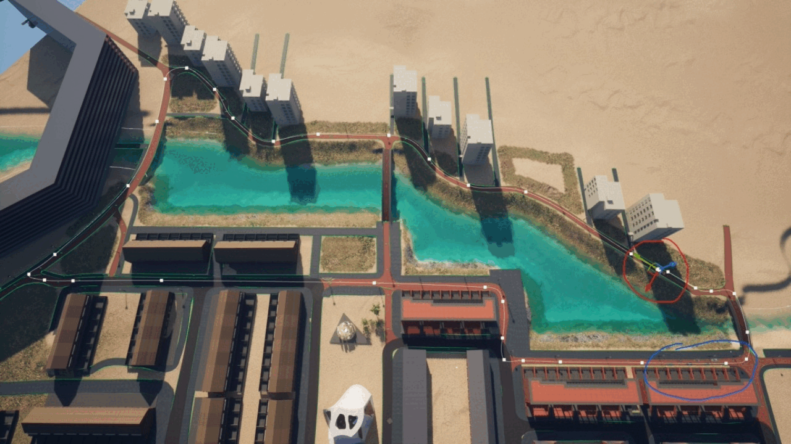

Project Status: On Hold
Project Type: Freelance / Personal
Project Duration: ~1 year
Software Used: Unreal Engine 5
Languages Used: Blueprints
Primary Role(s): Lead Programmer, Git Master
Team: 3 Game Devs, 1 3D Designer
My first Unreal Engine 5 project, developed with Veldboom Studios. What began as a small racing prototype quickly evolved into a year-long sandbox for experimentation and learning.
From AI-driven cars, procedural props to new game modes, and recycled systems like the quest and garage setup. The project kept evolving at a godspeed pace, each step adding a learning curve.
Early Development (July-Dec 2023):
I picked up Unreal's workflow through tutorial series and official docs,
applying the techniques in small experiments.
Trial and error became my main teacher, building confidence with Blueprints.

MVP Release (June 2024):
By June, we shipped the first MVP release (V0.0.01) featuring a single track and car, checkpoints and a working lap timer.
This was the first time the full game loop played from start to finish.
It also introduced custom PCG exclusion logic to manage tree placement through the biome system.
Released: June 9, 2024 - Relevant Gameplay; 1:10 ~ 4:50
Second Release (July 2024):
By July, we launched a second release (V0.0.02) with a new third-person mode,
a modular garage integrated into the pit lane, and general stability improvements.
Latest Release: July 19, 2024. Relevant Gameplay; 11:50 ~ 16:30
On Hold (August 2024):
Focus shifted towards polishing vehicle handling, refining UI/UX, and planning features like multiple vehicles and extended track systems.
Development paused after August 2024 as priorities shifted to new projects.
This project laid the foundation for my Unreal skills. While I've since surpassed the abilities I had during this era, Godspeed remains a strong base that shows how far I've grown.
One of the Quest System's many use cases: Guiding the player